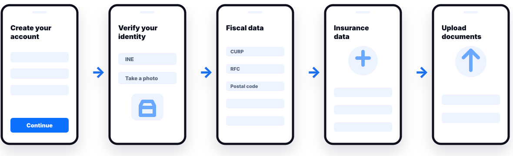
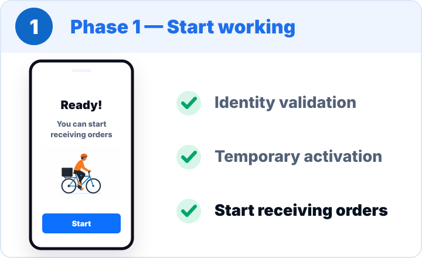
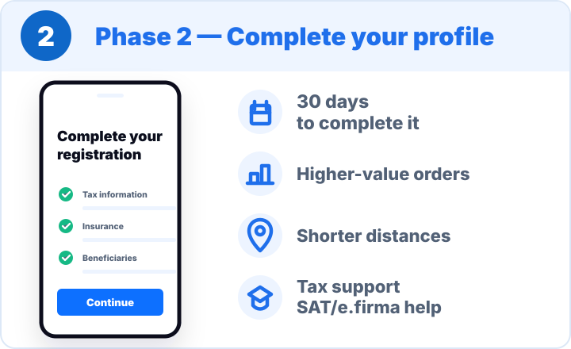

Mexican legal and fiscal requirements
CURP, SAT, insurance, etc.
Walmart · Product Discovery
Localizing Walmart's last-mile onboarding experience by balancing regulatory requirements, shopper needs, and operational continuity.
The challenge
Bringing the platform to Mexico meant balancing regulatory requirements, shopper experience, and operational needs.
CURP, SAT, insurance, etc.
Understanding the problem
More than 10 required steps stood between signing up and starting work, turning compliance into a barrier to activation.

My approach
Validated the initial flow and identified key drop-off points
Led the researcher studying shopper friction and experiences with competing platforms
Collaborated with Design and Content to map competitor onboarding flows
Observed shoppers' broader workflow through store visits and ride-alongs
Connected the evidence to onboarding opportunities
From insights to ideas
We looked beyond the registration flow to understand how requirements, expectations, and real working conditions shaped the onboarding experience.


What it enabled
Field research also revealed friction beyond registration. Those insights became the starting point for a Design Sprint focused on improving shoppers' day-to-day experience.
Research surfaced broader operational friction.
Turning evidence into concepts.
Explored and refined potential solutions with a cross-functional team.
Moving concepts toward Product.
The two-phase onboarding flow and Design Sprint concepts were incorporated into the Product backlog.
What happened next.
The onboarding initiative was deprioritized, with plans to revisit it in late 2026.